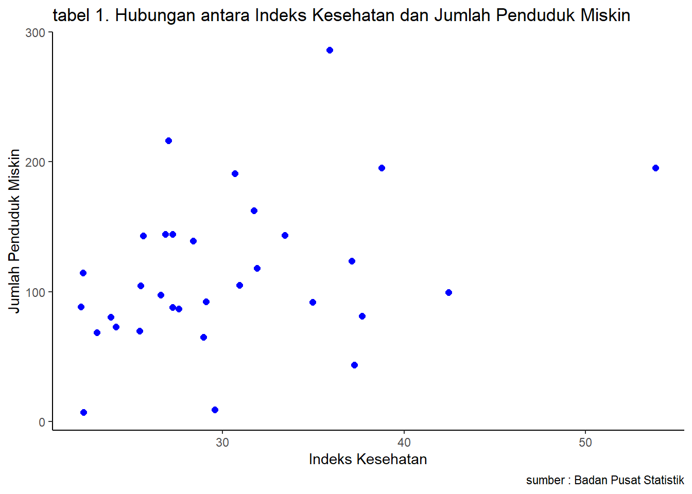

library("tidyverse")
library("readxl")
library("dplyr")Pengaruh Tingkat Kemiskinan di Provinsi Jawa Tengah Terhadap Indeks Kesehatan Tahun 2023
Metode Penelitian Politeknik APP Jakarta

1 Pendahuluan
1.1 Latar belakang
Kemiskinan merupakan masalah multidimensi karena berkaitan dengan ketidakmampuan akses secara ekonomi,politik, sosial budaya,dan partisipasi dalam masyarakat. Kemiskinan menjadi fokus utama pemerintah dalam mewujudkan kesejahteraan masyarakat. Provinsi Jawa Tengah, sebagai salah satu wilayah dengan populasi besar di Indonesia, menghadapi tantangan signifikan dalam mengurangi tingkat kemiskinan.
Salah satu dampak nyata dari tingginya angka kemiskinan adalah penurunan kualitas kesehatan masyarakat. Ketidakmampuan masyarakat untuk mengakses layanan kesehatan yang memadai, gizi yang baik, dan lingkungan hidup yang sehat menjadi faktor yang mempengaruhi indeks kesehatan di Provinsi Jawa Tengah. Indeks Kesehatan, sebagai salah satu indikator penting pembangunan manusia, mencerminkan kemampuan masyarakat dalam mencapai kehidupan yang produktif dan berkualitas.
1.2 Ruang lingkup
Ruang lingkup pembahasan masalah sesuai dengan variable yang akan digunakan pada analisis kali ini, yaitu mengenai Tingkat Kemiskinan Terhadap Indeks Kesehatan di Provinsi Jawa Tengah Pada Tahun 2023. Objek penelitian ini dari Badan Pusat Statistik Provinsi Jawa Tengah.
1.3 Rumusan masalah
Berdasarkan uraian latar belakang yang telah dijabarkan di atas, maka permasalahan pokok pada penelitian ini adalah sebagai berikut:
1. Mengidentifikasi Hubungan bagaimana tingkat kemiskinan di Provinsi Jawa Tengah pada tahun 2023 Apakah mempengaruhi indeks Kesehatan masyarakat?
1.4 Tujuan dan manfaat penelitian
Tujuan dari penelitian ini untuk Menganalisis pengaruh Tingkat Kemiskinan terhadap indeks kesehatan masyarakat di Provinsi Jawa Tengah pada Tahun 2023 dan diharapkan dapat ditemukan hubungan antara kemiskinan dan indeks kesehatan di Jawa Tengah, sehingga dapat menjadi landasan bagi pembuat kebijakan untuk merancang program yang lebih efektif dan berkelanjutan.
1.5 Package
Packages yang digunakan sebagai penunjang regresi multivariat dalam penelitian ini antara lain sebagai berikut:
2 Studi pustaka
Menurut (Yacoub, 2012) dalam penelitiannya menyatakan bahwa kemiskinan merupakan salah satu persoalan mendasar, karena kemiskinan menyangkut pemenuhan kebutuhan yang paling mendasar dalam kehidupan dan kemiskinan merupakan masalah global karena kemiskinan merupakan masalah yang dihadapi banyak negara.
3 Metode penelitian
3.1 Data
Berikut merupakan data yang digunakan sebagai objek penelitian. Data ini meliputi Jumlah Penduduk Miskin di Jawa Tengah tahun 2023 dan Data Indeks Kesehatan di Jawa Tengah Tahun 2023.
| KABUPATEN / KOTA | AK | JPM |
| CILACAP | 30,69 | 191 |
| BANYUMAS | 27,03 | 216,5 |
| PURBALINGGA | 33,43 | 143,41 |
| BANJARNEGARA | 28,38 | 138,99 |
| KEBUMEN | 53,85 | 195,45 |
| PURWOREJO | 37,69 | 81,28 |
| WONOSOBO | 37,12 | 123,7 |
| MAGELANG | 26,84 | 144,49 |
| BOYOLALI | 26,6 | 97,48 |
| KLATEN | 27,25 | 144,43 |
| SUKOHARJO | 23,08 | 68,79 |
| WONOGIRI | 25,5 | 104,82 |
| KARANGANYAR | 22,21 | 88,64 |
| SRAGEN | 22,3 | 114,62 |
| GROBOGAN | 31,72 | 162,52 |
| BLORA | 42,45 | 99,61 |
| REMBANG | 34,95 | 91,97 |
| PATI | 31,89 | 118,18 |
| KUDUS | 28,96 | 65,16 |
| JEPARA | 27,59 | 86,75 |
| DEMAK | 25,63 | 143,26 |
| TEMANGGUNG | 24,13 | 72,96 |
| KENDAL | 29,08 | 92,64 |
| BATANG | 25,43 | 69,97 |
| PEKALONGAN | 27,25 | 87,93 |
| PEMALANG | 38,77 | 195,57 |
| TEGAL | 30,93 | 105,03 |
| BREBES | 35,91 | 286,14 |
| MAGELANG | 22,34 | 7,45 |
| SURAKARTA | 37,25 | 43,89 |
| SALATIGA | 29,58 | 9,41 |
| SEMARANG | 23,85 | 80,53 |

Logo Badan Pusat Statistik
Penelitian ini menggunakan data Tingkat Kemiskinan Menurut Kabupaten/Kota di Provinsi Jawa Tengah.
Baca data
#import dataset
library(readxl)
DAT<-read_excel('DAT.xlsx')
head(DAT)# A tibble: 6 × 3
`KABUPATEN / KOTA` AK JPM
<chr> <dbl> <dbl>
1 CILACAP 30.7 191
2 BANYUMAS 27.0 216.
3 PURBALINGGA 33.4 143.
4 BANJARNEGARA 28.4 139.
5 KEBUMEN 53.8 195.
6 PURWOREJO 37.7 81.3library("ggplot2")
library("readxl")
library("dplyr")
ggplot(data=DAT,aes(x=AK,y=JPM))+
geom_point(color="blue",size=2)+
labs(title="tabel 1.Hubungan antara Indeks Kesehatan dan Tingkat Kemiskinan",
x="Indeks Kesehatan",
y="Tingkat Kemiskinan",
caption = "sumber : Badan Pusat Statistik")+
theme_classic()
3.2 Metode analisis
Metode yang dipilih adalah regresi univariat atau Ordinary Least Square (OLS) dengan 1 variabel independen. Penelitian ini merbaksud mencari hubungan antara Pengaruh Tingkat Kemiskinan (JPM) di Provinsi Jawa Tengah Terhadap Indeks Kesehatan (AK) Tahun 2023. Spesifikasi yang dilakukan adalah:
\[ y_{t}=\beta_0 + \beta_1 x_t+\mu_t \] di mana \(y_t\) adalah AK dan \(x_t\) adalah JPM.
4 Pembahasan
4.1 Pembahasan masalah
Dikarenakan peneliti menggunakan OLS, maka fokus yang akan dibahas hanya mengaitkan Indeks Kesehatan dan Jumlah Penduduk Miskin. Data tersebut disatukan sehingga menampilkan regresi seperti ini.
#import dataset
library(readxl){DAT<-read_excel('DAT.xlsx')} head(DAT)
4.2 Analisis masalah
Hasil regresinya adalah
reg1<-lm(AK~JPM,data=DAT)
summary(reg1)
Call:
lm(formula = AK ~ JPM, data = DAT)
Residuals:
Min 1Q Median 3Q Max
-7.996 -4.377 -1.821 2.373 20.088
Coefficients:
Estimate Std. Error t value Pr(>|t|)
(Intercept) 25.38199 2.54255 9.983 4.76e-11 ***
JPM 0.04287 0.01978 2.167 0.0383 *
---
Signif. codes: 0 '***' 0.001 '**' 0.01 '*' 0.05 '.' 0.1 ' ' 1
Residual standard error: 6.474 on 30 degrees of freedom
Multiple R-squared: 0.1354, Adjusted R-squared: 0.1065
F-statistic: 4.697 on 1 and 30 DF, p-value: 0.038285 Kesimpulan
Dari regresi yang telah dilakukan, menunjukkan bahwa setiap peningkatan 100 ribu jiwa dalam jumlah penduduk miskin di Indonesia, indeks kesehatan di provinsi Jawa Tengah diperkirakan meningkat sebesar 0,04267 persen. Berdasarkan nilai p-value sebesar 0,0219, hubungan ini signifikan secara statistik pada tingkat signifikansi 5 persen, meskipun pengaruhnya relatif kecil.
Dari sini dapat disimpulkan bahwa Jumlah Penduduk Miskin dapat memengaruhi Indeks Kesehatan pada tahun 2023.
6 Referensi
Badan Pusat Statistik. (n.d.). Retrieved January 01, 2025, from https://jateng.bps.go.id/id
Badan Pusat Statistik. (n.d.). Retrieved January 01, 2025, from https://jateng.bps.go.id/id/statistics-table/2/MzQjMg%253D%253D/kemiskinan.html
Rahman, P. A., Firman, F., & Rusdinal, R. (2019). Kemiskinan dalam perspektif ilmu sosiologi. Jurnal Pendidikan Tambusai, 3(3), 1542-1548.
Ferezagia, D. V. (2018). Analisis tingkat kemiskinan di Indonesia. Jurnal Sosial Humaniora Terapan, 1(1), 1.
Prawoto, N. (2008). Memahami kemiskinan dan strategi penanggulangannya. Jurnal Ekonomi & Studi Pembangunan, 9(1), 56-68.
Agustina, D. (2020) ‘Analisis Pengaruh Tingkat Pengangguran Terbuka Dan Indeks Pembangunan Manusia Terhadap Kemiskinan di provinsi jawa tengah’, Jurnal Saintika Unpam : Jurnal Sains dan Matematika Unpam, 3(1), p. 81. doi:10.32493/jsmu.v3i1.5640.